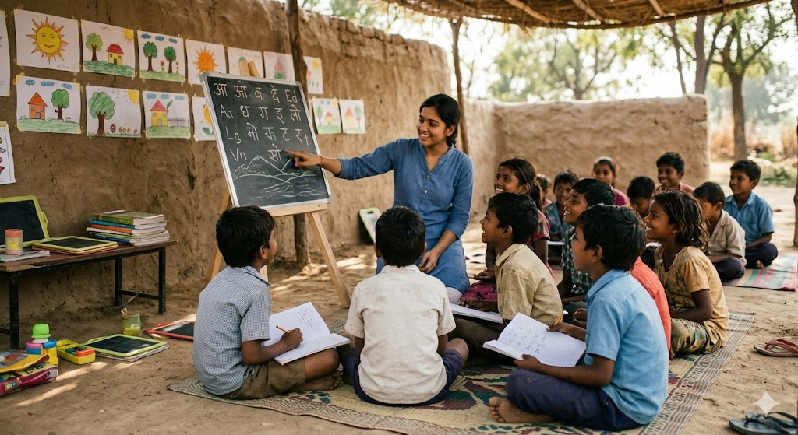
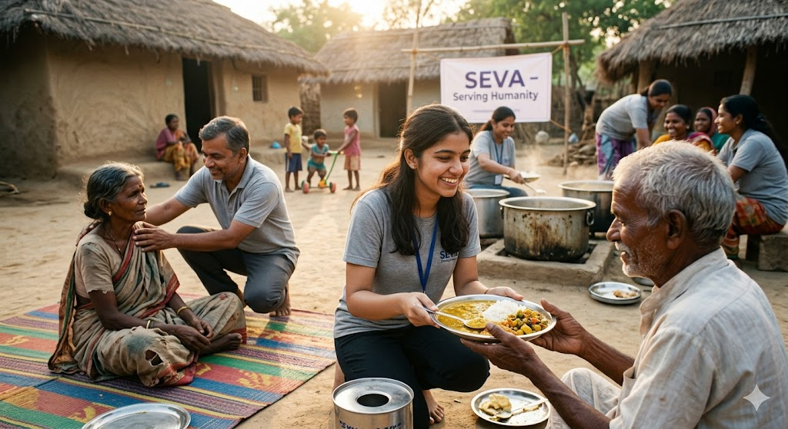
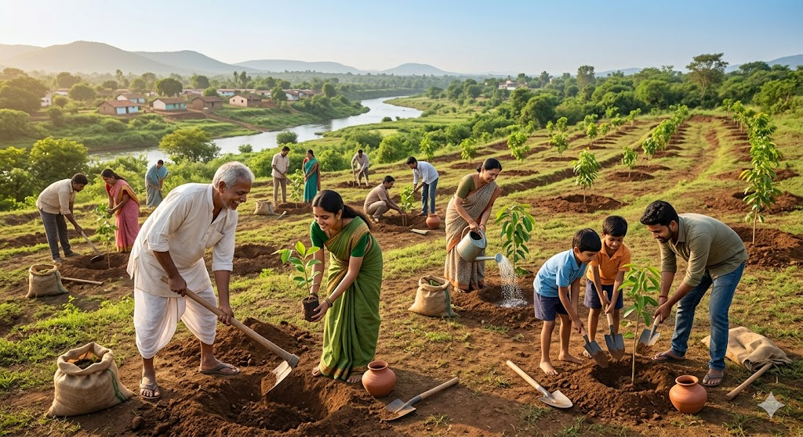
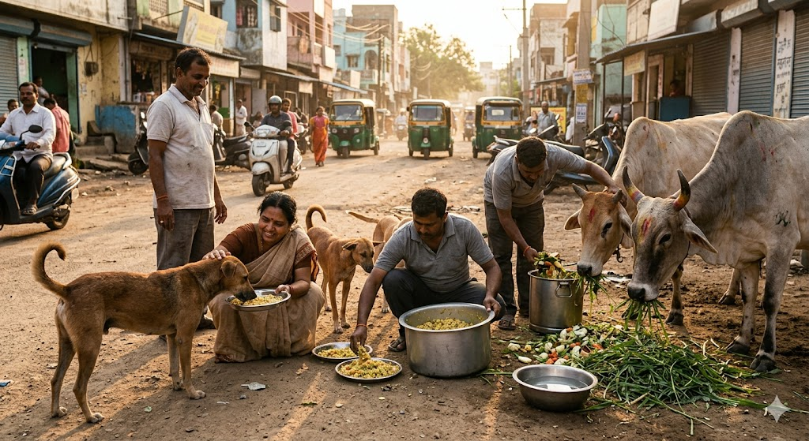

Jeev
Empowring lives & spread Awareness

udaan
souring towards future.
Empowring lives & spread Awareness
souring towards future.
Spreading awareness, creating impact, and building communities.
InAmigos Foundation was founded on September 23, 2020, by Mr. Govind Shukla (Founder & CEO). It is a Section 8 registered non-profit organization, licensed by the Central Government. It has its base at Chhattisgarh. It holds 80G & 12A certifications, ensuring transparency, accountability and tax-exempt benefits for donors. Our foundation is also CSR-1 registered, allowing us to collaborate with corporate partners for impactful Corporate Social Responsibility (CSR) initiatives. Additionally, we are NITI Aayog registered, aligning our work with national development goals and hold the prestigious IAF ISO 9001:2015 certification, signifying our commitment to maintaining high-quality standards in operations and service delivery. Our Key Initiatives 1. Project Seva – Providing food and clothing to the underprivileged. 2. Project Bachpanshala – Ensuring quality education for underprivileged children. 3. Project Jeev – Animal welfare, including rescue, protection and feeding. 4. Project Udaan – Women empowerment through skill development and financial independence. 5. Project Prakriti – Environmental conservation and sustainability efforts. 6. Project Vikas – Enhancing employability through skill development programs. With a strong network of dedicated professionals, volunteers and corporate partners, we work tirelessly to bring positive change in society. Our social media platforms actively showcase our impact, keeping our supporters informed and engaged. At InAmigos Foundation, we believe in the power of collective action. Every contribution is directed towards essential causes such as food distribution, education, women empowerment, animal welfare, environmental sustainability and social inclusion programs across India. Join Us in Making a Difference Together, we can create a more inclusive, compassionate and empowered society..

Bachpanshala is an initiative by InAmigos Foundation focused on providing free education to underprivileged children. Through engaging, activity-based learning and dedicated volunteers, we create a safe space where children can learn, grow, and build confidence.Beyond academics, the program nurtures life skills, creativity, and awareness—helping every child move closer to a brighter future.

Seva is InAmigos Foundation’s initiative focused on serving communities with compassion. Through food drives, essential support, and volunteer efforts, we aim to bring dignity, care, and hope to those who need it most..

Prakriti is InAmigos Foundation’s initiative focused on environmental sustainability. Through tree plantation drives and awareness programs, we aim to create greener communities and inspire responsible living for a better tomorrow.

Project Jeev by the InAmigos Foundation is a compassionate initiative focused on animal welfare—feeding, sheltering, rescuing, and spreading awareness about the plight of stray animals across India. It aims to ensure that no animal goes hungry or uncared for, while also linking animal welfare to broader environmental and social impact.

Through these initiatives, we have reached thousands of individuals, improved literacy rates, promoted environmental responsibility, and provided essential healthcare services. Together, we are building a healthier, more sustainable future.
Be a part of our journey to create lasting change. Volunteer, support, or spread the word!
Become a Volunteer Support Us